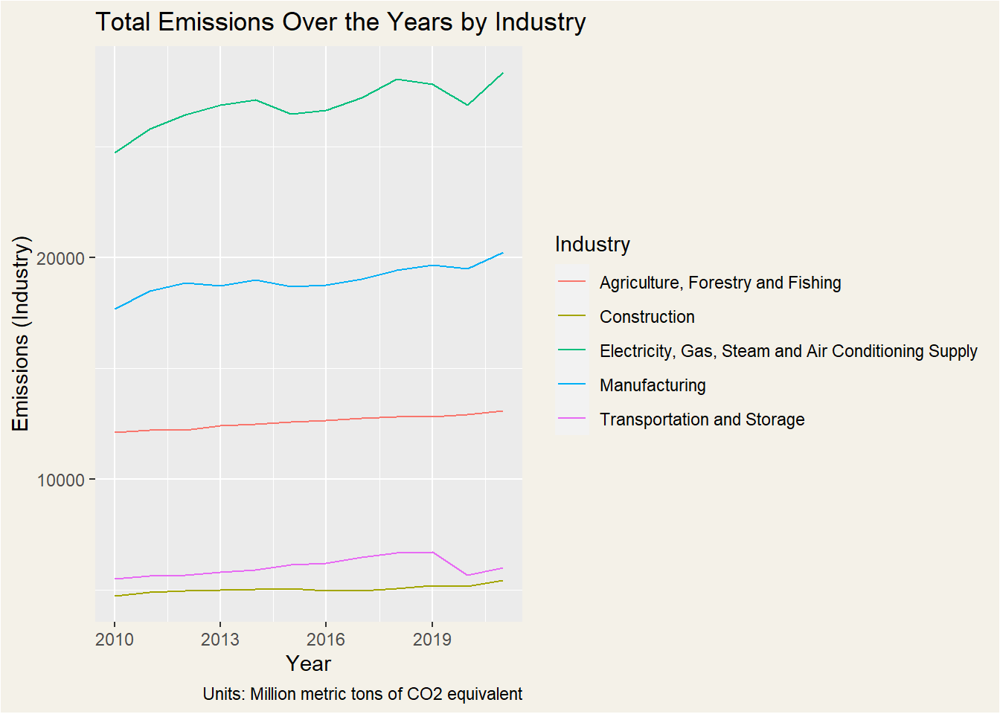
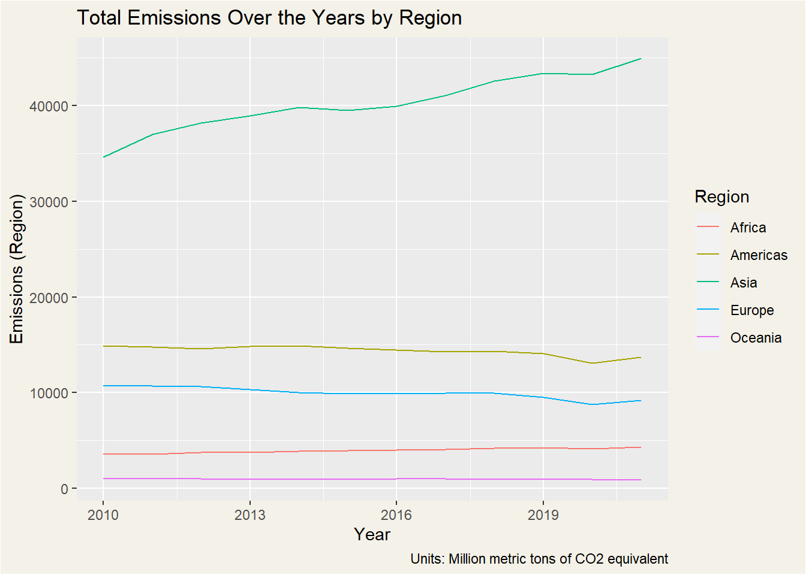
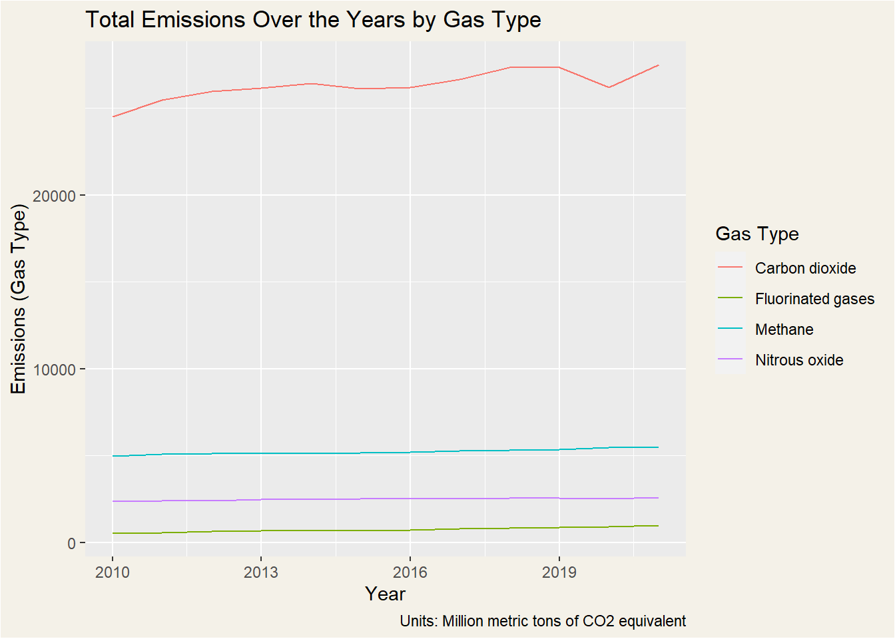

#read the csv file
data <- read.csv("Annual_Greenhouse_Gas_(GHG)_Air_Emissions_Accounts.csv")
#we are only using the columns: Country, Industry, Gas_Type, F2010, F2011, F2012, F2013, F2014, F2015, F2016, F2017, F2018, F2019, F2020, F2021
#create a new data frame with only the needed columns of suitable names
new_names <- c("Region", "Industry", "Gas_Type", 2010, 2011, 2012, 2013, 2014, 2015, 2016, 2017, 2018, 2019, 2020, 2021)
new_data <- data %>%
filter(Country %in% c("Africa", "Americas", "Asia", "Europe", "Oceania")) %>%
filter(Industry %in% c("Manufacturing", "Electricity, Gas, Steam and Air Conditioning Supply", "Transportation and Storage", "Agriculture, Forestry and Fishing", "Construction")) %>%
select(Country, Industry, Gas_Type, F2010, F2011, F2012, F2013, F2014, F2015, F2016, F2017, F2018, F2019, F2020, F2021) %>%
setNames(new_names)Greenhouse Gas Emissions Trends
Introduction
As concerns about greenhouse gas emissions continue to grow globally, it has become increasingly important to deepen our understanding about the main sources and driving forces behind these emissions. Understanding these factors is crucial in the process of making informed decisions and the development of effective strategies to address the urgent climate crisis.
Our analysis, covering the years from 2010 to 2021, aims to reveal the contributing factors behind greenhouse gas emissions, which are intricately linked to climate change. Our data-driven approach provides us with the insights necessary to make informed decisions and implement comprehensive strategies to address this ongoing environmental challenge, ultimately guiding us towards a more sustainable future.
Let us first watch a video to have a greater understanding about the Greenhouse Effect.
Data
We will be analysing Greenhouse Gas Emissions Trends based on the Industries, Regions and Gas Types shown in the table below:
| Industries |
|
| Regions |
|
| Gas Types |
|
Analysis
In our analysis of greenhouse gas emissions from 2010 to 2021, we will be using various data visualisation techniques to help us uncover the story hidden within the data. These methods will give us a comprehensive view of emissions trends, relationships, and key contributors.
All emission data are expressed in million metric tons of CO2 equivalent as the standardised unit of measurement.
Before anything can be done, lets clean the dataset to make it suitable for use!
Region Industry Gas_Type 2010 2011
1 Africa Agriculture, Forestry and Fishing Carbon dioxide 5.483346 5.561607
2 Africa Agriculture, Forestry and Fishing Greenhouse gas 686.799216 698.141109
3 Africa Agriculture, Forestry and Fishing Methane 458.650162 466.220169
4 Africa Agriculture, Forestry and Fishing Nitrous oxide 222.665707 226.359333
5 Africa Construction Carbon dioxide 93.512324 90.685530
6 Africa Construction Greenhouse gas 174.497886 169.021474
2012 2013 2014 2015 2016 2017 2018
1 6.161361 6.680177 7.118153 7.201321 7.926669 8.598177 8.885628
2 721.448149 736.429663 749.789681 763.999795 790.552279 801.551149 820.263383
3 482.410659 490.588776 499.845474 509.620350 528.344281 533.778860 548.656038
4 232.876128 239.160710 242.826054 247.178124 254.281329 259.174112 262.721717
5 91.180993 92.357963 92.502126 90.073800 90.658470 93.987951 95.613220
6 174.317801 171.335355 171.107001 168.523698 166.924889 172.889951 176.393057
2019 2020 2021
1 9.193573 9.519654 9.869859
2 841.909644 859.337790 875.720444
3 563.256921 574.852827 584.961495
4 269.459149 274.965308 280.889091
5 96.690936 87.940823 93.301037
6 178.773804 164.309265 170.458463Time Series Plots:
- We will be using line graphs to show how greenhouse gas emissions have changed over time (2010-2021) for each of the following categories: Industry, Region, and Gas Types.
1. Industry against Time
The plot shown below clearly illustrates that the Electricity, Gas, Steam and Air Conditioning Supply industry exhibits notably higher emission rates in comparison to other industries.

industries <- unique(new_data$Industry)
years <- 2010:2021
#create empty data frame to store the results
combined_data <- data.frame(Year = years)
#loop through each industry and add the data to combined_data
for (industry in industries) {
#calculate the sums for each year
results <- sapply(years, function(year) {
#filter data for the specified year and industry
filtered_data <- new_data %>%
filter(Industry == industry) %>%
summarise(Year = as.integer(year), Total_Emissions = sum(get(as.character(year)))
)
})
result <- t(results)
emissions <- as.numeric(result[,"Total_Emissions"])
combined_data[industry] <- emissions
}
combined_data_longer <- combined_data %>%
pivot_longer(cols = -Year, names_to = "Industry", values_to = "Emissions")
#create the plot for industries
ggplot(combined_data_longer, aes(x = Year, y = Emissions, color = Industry)) +
geom_line() +
labs(x = "Year", y = "Emissions (Industry)",
color = "Industry",
title="Total Emissions Over the Years by Industry",
caption = "Units: Million metric tons of CO2 equivalent")If you are interested to see the individual plots, feel free to select the industry of your choice!
Emissions Over the Years by Industry
2. Gas Type against Time
The plot shown below clearly illustrates that Carbon Dioxide exhibits notably higher emission rates in comparison to other greenhouse gases.

gas_types <- c("Carbon dioxide","Fluorinated gases","Methane","Nitrous oxide")
years <- 2010:2021
#create empty data frame to store the results
combined_data <- data.frame(Year = years)
#loop through each gas type and add the data to combined_data
for (gas_type in gas_types) {
#calculate the sums for each year
results <- sapply(years, function(year) {
#filter the data for the specified year and gas type
filtered_data <- new_data %>%
filter(Gas_Type == gas_type) %>%
summarise(Year = as.integer(year), Total_Emissions = sum(get(as.character(year)))
)
})
result <- t(results)
emissions <- as.numeric(result[,"Total_Emissions"])
combined_data[gas_type] <- emissions
}
combined_data_longer <- combined_data %>%
pivot_longer(cols = -Year, names_to = "Gas_Type", values_to = "Emissions")
#create the plot
ggplot(combined_data_longer, aes(x = Year, y = Emissions, color = Gas_Type)) +
geom_line() +
labs(x = "Year", y = "Emissions (Gas Type)",
color = "Gas Type",
title = "Total Emissions Over the Years by Gas Type",
caption = "Units: Million metric tons of CO2 equivalent")If you are interested to see the individual plots, feel free to select the gas type of your choice!
Emissions Over the Years by Gas Type
3. Region against Time
The plot shown below clearly illustrates that Asia exhibits notably higher emission rates in comparison to other regions.

#plot all gas types in 1 graph
regions <- unique(new_data$Region)
years <- 2010:2021
#create empty data frame to store the results
combined_data <- data.frame(Year = years)
#loop through each region and add the data to combined_data
for (region in regions) {
#calculate the sums for each year
results <- sapply(years, function(year) {
#filter the data for the specified year and region
filtered_data <- new_data %>%
filter(Region == region) %>%
summarise(Year = as.integer(year), Total_Emissions = sum(get(as.character(year)))
)
})
result <- t(results)
emissions <- as.numeric(result[,"Total_Emissions"])
combined_data[region] <- emissions
}
combined_data_longer <- combined_data %>%
pivot_longer(cols = -Year, names_to = "Region", values_to = "Emissions")
#create the plot
ggplot(combined_data_longer, aes(x = Year, y = Emissions, color = Region)) +
geom_line() +
labs(x = "Year", y = "Emissions (Region)",
color = "Region",
title = "Total Emissions Over the Years by Region",
caption = "Units: Million metric tons of CO2 equivalent")If you are interested to see the individual plots, feel free to select the region of your choice!
Emissions Over the Years by Region
Bar Plots
1. Gas Type against Industry
From the plots below, we can see how the total emissions of each gas type vary across different industries.
2. Gas Type against Region
From the plots below, we can see how the total emissions of each gas type vary across different regions.